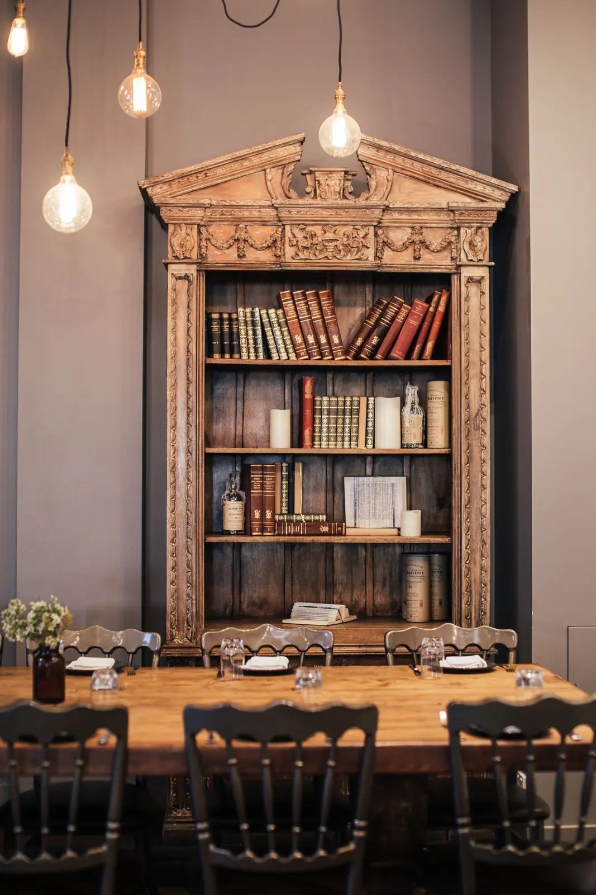
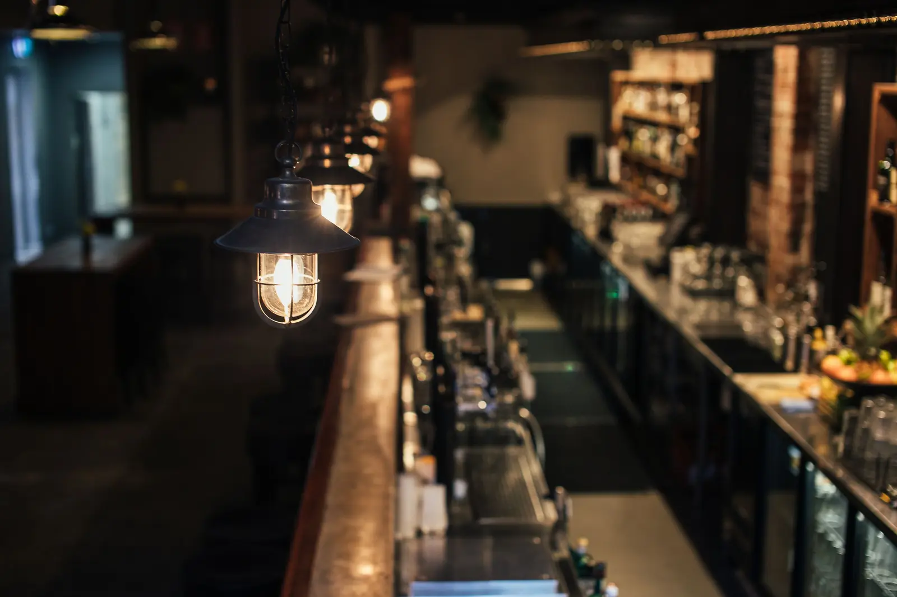
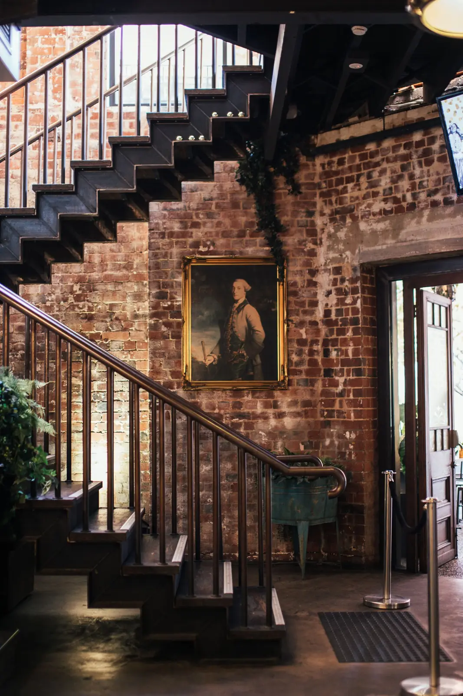
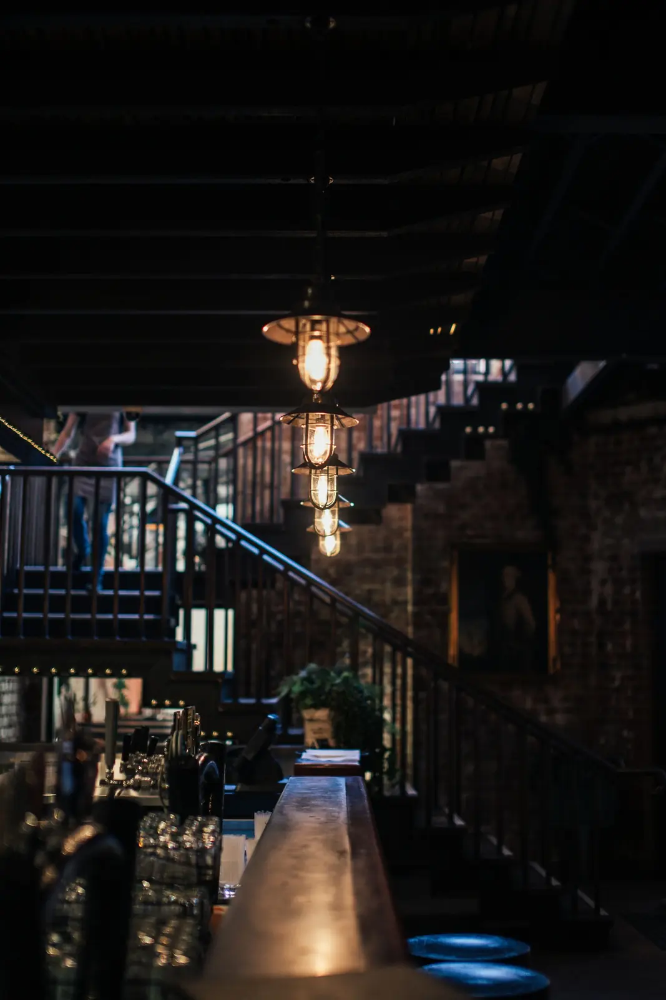
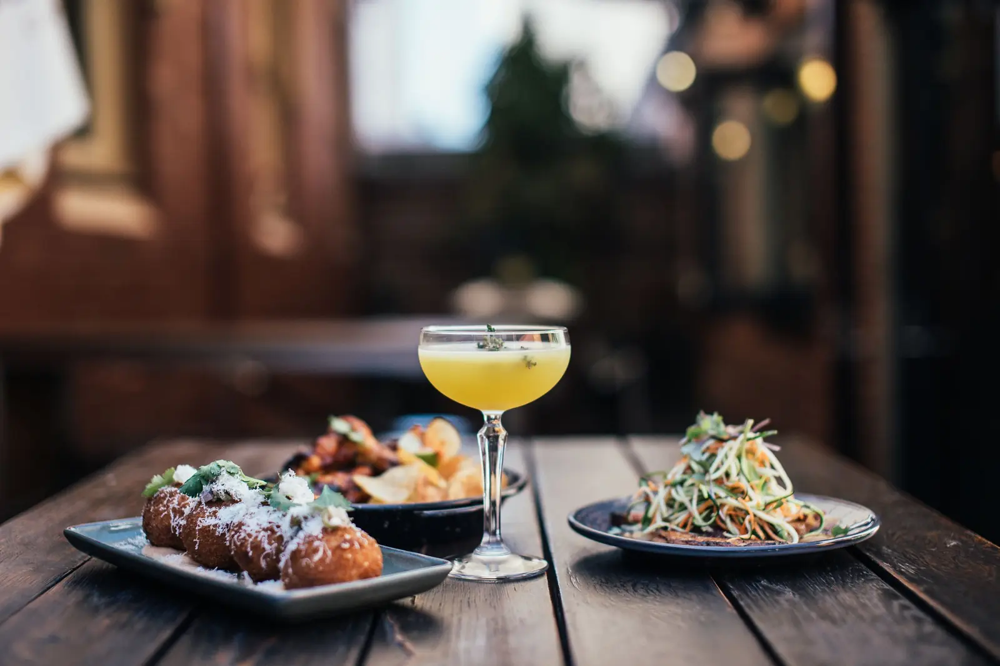
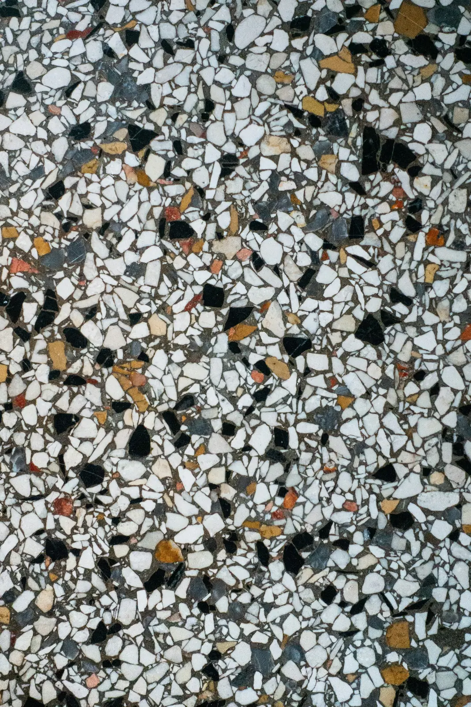
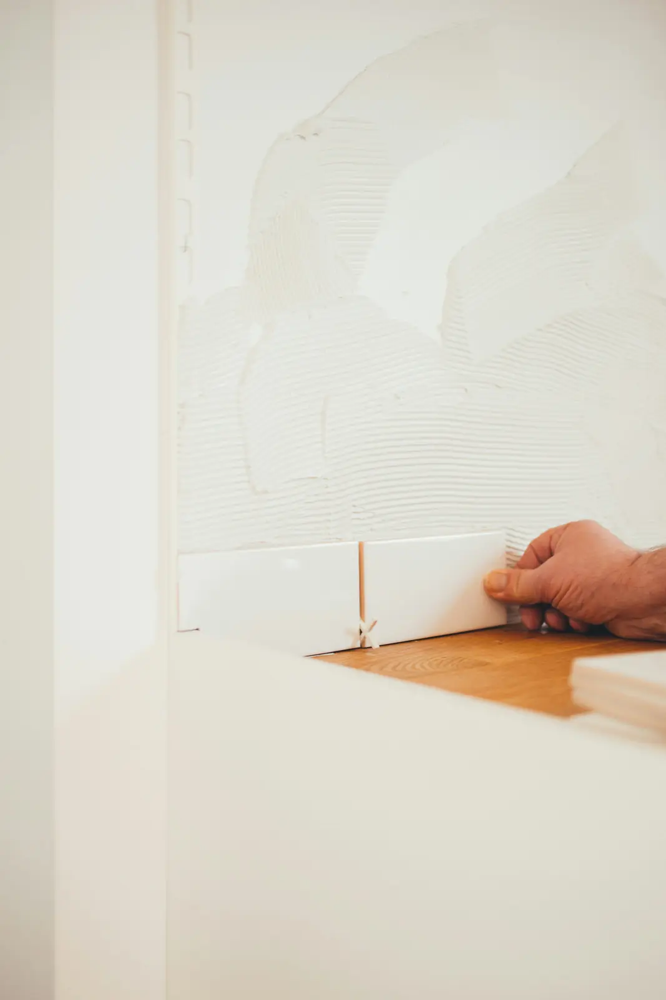
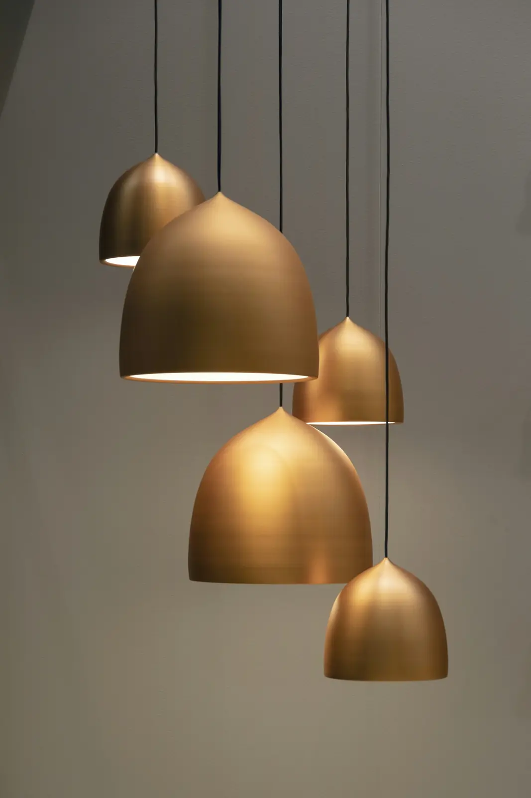

Ember
Placeholder project. The name, quote and photographs stand in for real work.
A wood-fire restaurant in a former Alfama warehouse. Eighty-four covers around an open hearth, built to feel like it’s always been there.
- Location
- Alfama, Lisbon, Portugal
- Type
- Wood-fire restaurant
- Size
- 310 m²
- Covers / seats
- 84 covers
- Scope
- Concept · Interior design · Lighting · Joinery · FF&E · Build
- Duration
- 9 months, brief to opening · 22 weeks on site
- Opened
- March 2025
The brief
The chef wanted every seat to see the fire. The building wanted to keep its stone walls, its awkward columns and a floor that falls almost a metre from front to back.
The move
Put the fire in the middle.
We planned the room as three terraces stepping down toward the hearth, so the fall in the floor became the seating plan. The columns became the edges of rooms rather than obstacles in one.
What we did
- Concept
- Interior design
- Lighting
- Joinery
- FF&E
- Build


FilmPlaceholder stock footage



The details



-
01Materials
Four materials, no more: lime plaster, blackened steel, oak and a hand-glazed terracotta tile.
-
02Tile
The terracotta runs unbroken from the bar front to the kitchen pass: 26 metres of it, set out by one tiler.
-
03Light
Warm and low throughout, with a single scene change at dusk. In March, that’s 19:40.
The build
We ran the build with a Lisbon contractor under our contract and our own site lead, cleaning the stone rather than covering it. Every new service runs in the floor or the terrace risers, and the hearth hood was sized with the kitchen engineer so the room smells of wood, not smoke.
The outcome
At 84 covers the room still holds a conversation: the terraces break up the sound as well as the sightlines.
No table is more than a dozen steps from the pass, and the kitchen feels it by the second sitting.
In their words
“Turnover went up and the room got quieter. I didn’t know both were possible.”
Credits
- Photography
- Placeholder stock photography
- Design & build
- Two Squares
- With
- Local contractor: [Contractor] · Kitchen engineer: [Consultant]

Opening something like this?
Send us the floor plan and the opening date. We’ll come back with how the room could work.